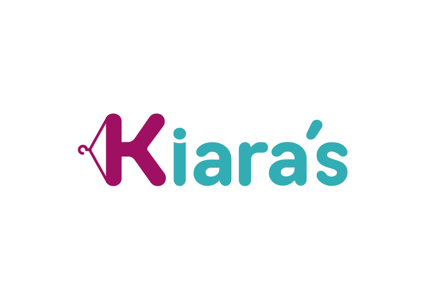
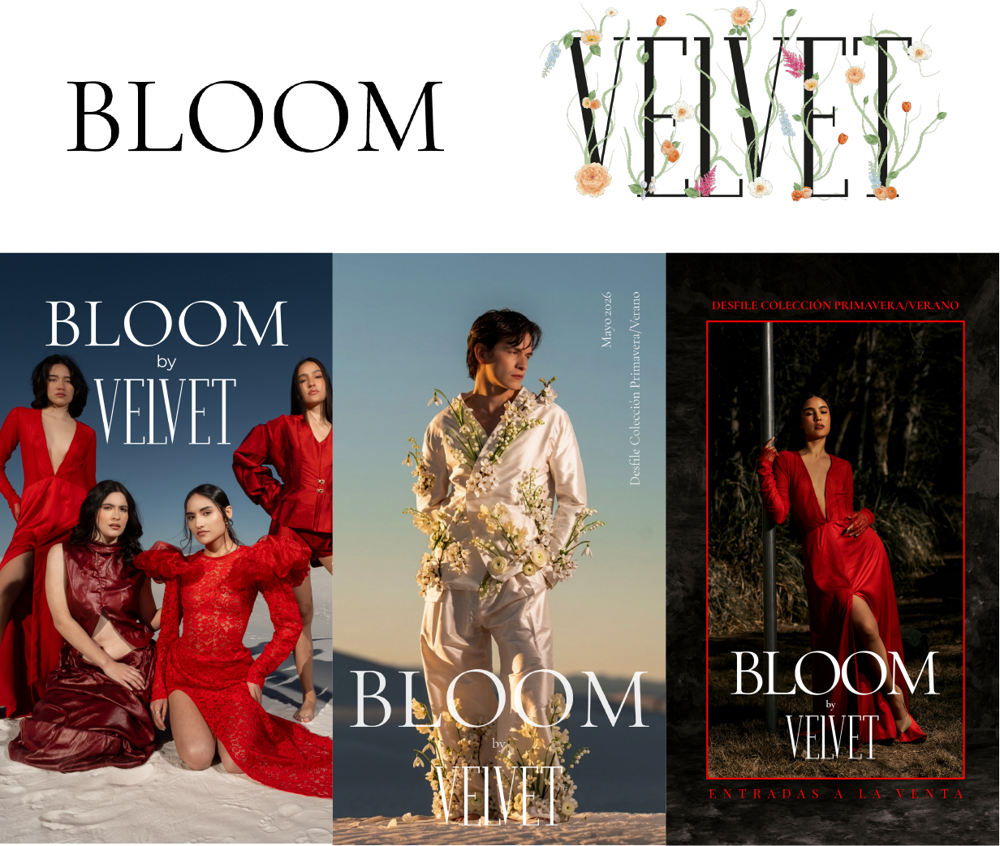
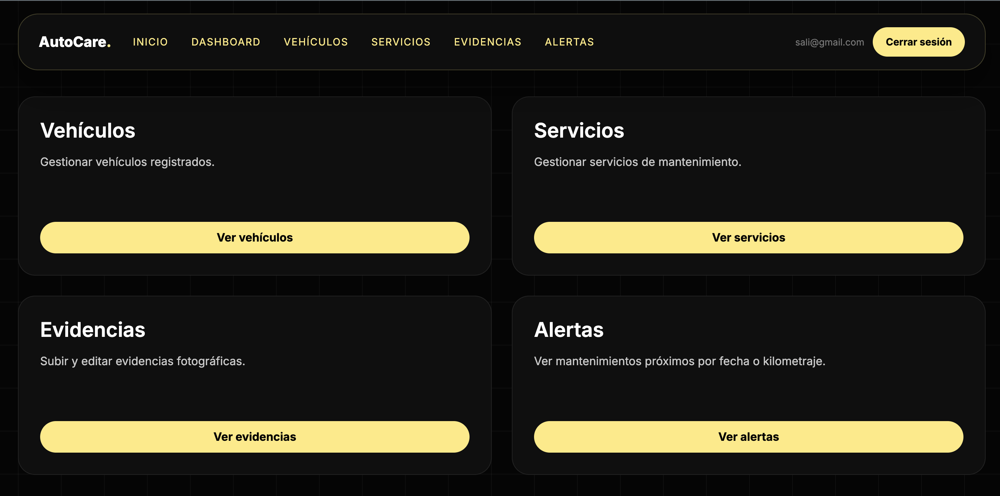
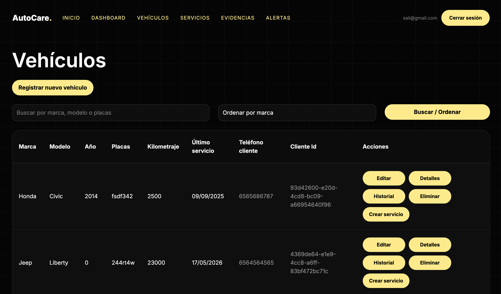
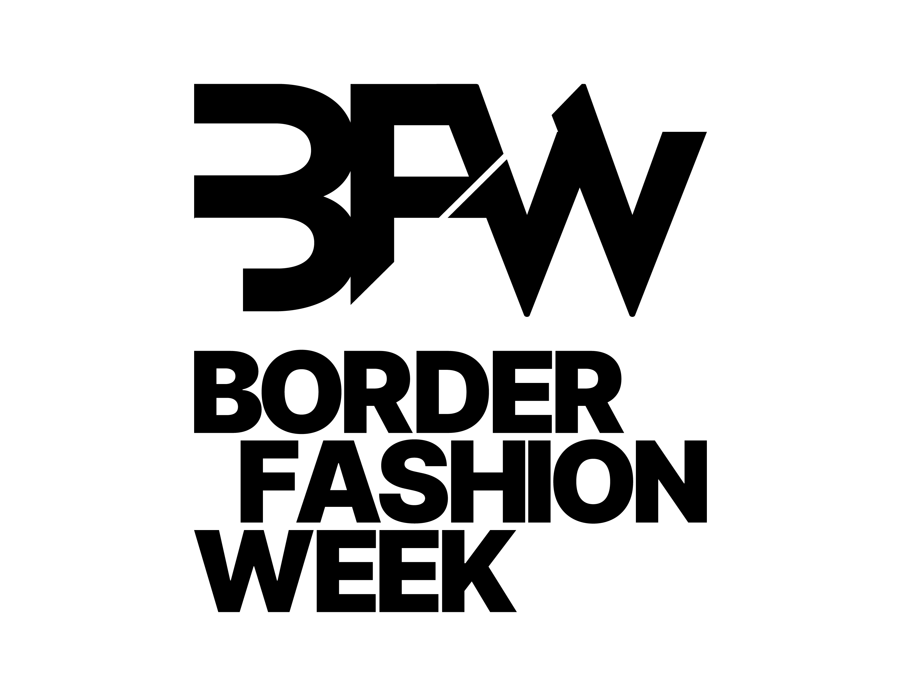
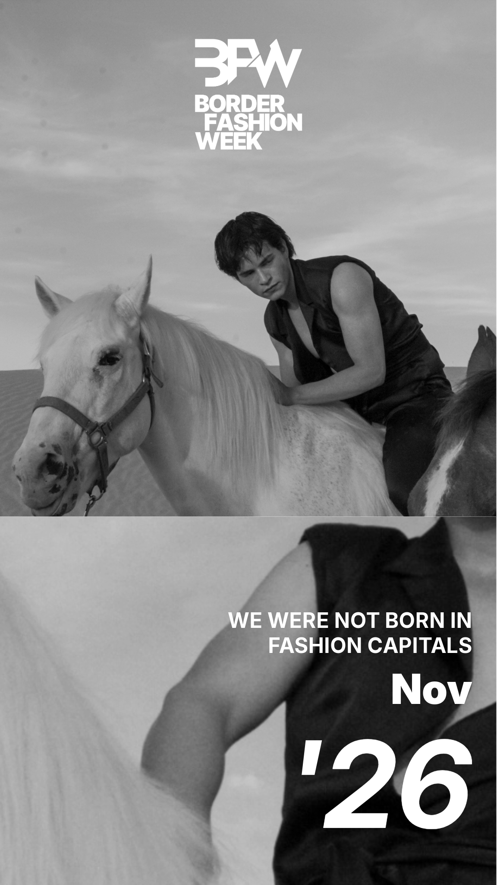

I am a digital designer focused on creating visual, functional, and interactive projects. I work with web design, visual identity, photography, and digital experiences, combining aesthetics, strategy, and technology to transform ideas into clear and engaging solutions.
About Me
I am a digital designer from Ciudad Juárez and a student at UACJ. I have experience in photography, branding, photo retouching, video editing, and frontend and backend web development. I am interested in creating visual, functional, and interactive projects that connect design, technology, and communication.
What I Do
Experience
My Works
Kiara's
Branding / Brand Redesign / Visual Identity
Rebranding project focused on redesigning the Kiara’s Closet logo. The goal was to refresh the brand’s visual identity while maintaining a modern and versatile aesthetic that could adapt to different digital platforms and graphic applications.

Bloom
Branding / Visual Identity / Social Media
Branding for BLOOM, a project developed within Velvet. I worked on the visual identity, social media content, and event organization support, maintaining a coherent and engaging visual communication style.

AutoCare
Web Development
AutoCare is a web application focused on managing automotive services, digital evidence, vehicles, and users. The project integrates a web interface with CRUD operations, authentication, and information management.


Border Fashion Week
Branding / Visual Identity / Concept
Visual identity project for Border Fashion Week, where I participated in the logo design, branding development, and construction of the project’s overall concept. The proposal aimed to represent a contemporary vision of border fashion, integrating style, creativity, and visual identity into a brand adaptable for digital media, graphic applications, and event communication.

.png)

Extra Works
Reels & Video Content
Video Editing / Social Media
A selection of additional video projects created for social media, including reels, short-form content, behind-the-scenes edits, and visual pieces designed for digital platforms.